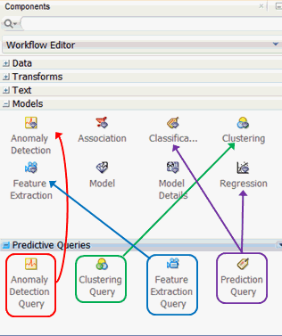
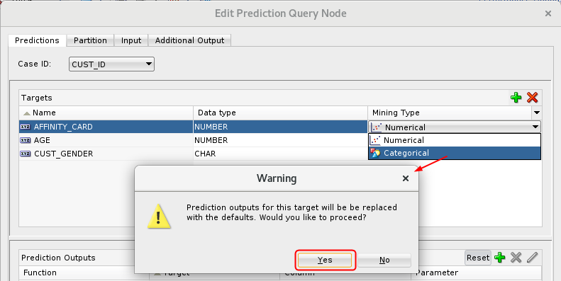
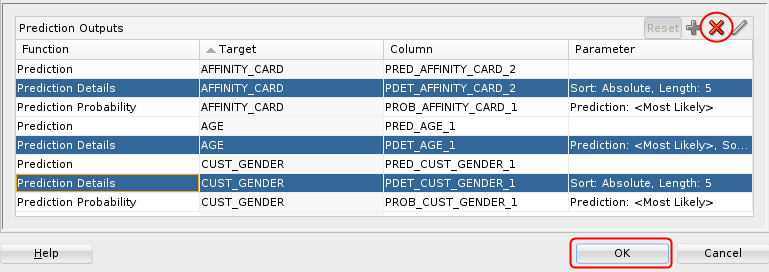
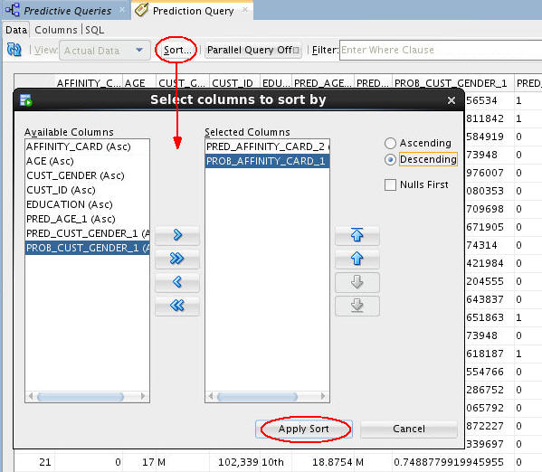

Create
A Predictive Query Workflow
Create
A Predictive Query Workflow Before You Begin
Before You Begin
This 15-minute tutorial shows you how to create a predictive query workflow, add data sources and execute a classification predictive query.
Background
Data mining can be used to solve many kinds of predictive analysis problems, including the following:
- Predicting outcomes or values (Classification or Regression models)
- Finding natural segments or clusters in a population (Clustering models)
- Finding fraudulent or rare events (Anomaly Detection models)
- Creating new attributes (features) for a target variable by combining original attributes (Feature Extraction models)
Oracle Data Miner provides predictive query capabilities for these specific model types. The predictive query options enable dynamic scoring of these model by generating a transient model that is not persisted.
What Do You Need?
- Oracle Database 19c Enterprise Edition
- Oracle SQL Developer version 19.x
- Oracle Data Miner User Account
- ABC Insurance Project
 About Predictive Queries
About Predictive Queries
The Predictive Queries node is part of the Components pane. As shown below, the Models and Predictive Queries node groups are opened.
There are four options in the Predictive Queries node group:
- Anomaly Detection Query
- Clustering Query
- Feature Extraction Query
- Prediction Query

Each Predictive Query option enables dynamic scoring of an associated model type or types.
 Create
a Workflow and Add a Data Source
Create
a Workflow and Add a Data Source
- Right-click the project ABC Insurance and select New Workflow from the menu.
- In the Create Workflow window, enter Predictive Queries as the name and click OK.
- In the Components tab, drill on the Data category, drag and drop a Data Source node on the workflow, and select MINING_DATA_BUILD_V from the Available Tables/Views list in the wizard.
- Click Finish to complete the data source node definition and close the wizard.
 Create
and Execute a Prediction Query
Create
and Execute a Prediction Query
When creating a Classification or a Regression model, you must define a target attribute for the prediction. Predictive results are generated by the model and placed in the target attribute for each case in the model scoring process.
- Open the Predictive Queries category in the Components tab.
- Drag and drop the Prediction Query node from the Components tab to the Workflow pane.
- Connect the data source node to the Prediction Query node.
- Double-click the Prediction Query node to
open the Edit Prediction Query Node window. Then, perform the
following:
- On the Predictions tab, select CUST_ID as the Case ID attribute.
- Click the Add Prediction Target tool (green “+” icon). The Add Target dialog box appears.
- In the Available list, select the AFFINITY_CARD, AGE, and CUST_GENDER attributes to serve as a prediction targets.
- Move the chosen attributes to the Selected list.
- Click OK.
- Change the mining type for the AFFINITY_CARD attribute from
Numerical to Categorical and click Yes in the Warning
dialog.

Description of the illustration edit-mining-type.png - Click the Partition tab.
- Click the Add Partitioning Columns tool (green “+” icon). The Add Partition Column dialog box appears.
- Select the EDUCATION attribute in the Available list and move it to the Selected list.
- Click OK.
- Select the Input tab. All of the input
columns are listed.
By default, inputs are automatically determined using heuristics. If you want to remove or modify the mining type of any input column, you must deselect this option.
- Select the Predictions tab and examine the Prediction Outputs region at the bottom of the tabbed pane.
- Remove the Prediction Details outputs for all three targets
by performing the following:
- Select the three Prediction Details functions in the Prediction Outputs pane.
- Click the Remove Prediction Output Function tool (red “x” icon).
- Click OK to close the Edit Prediction Query Node window.

 Execute
the Prediction Query
Execute
the Prediction Query
- Right-click the Prediction Query node and select either Run or View Data from the menu. In this example, we select the View Data option.
- Click the Sort button and specify the
following criteria:
- Prediction Affinity Card, in Descending order (1 is YES, 0 is NO).
- Probability Affinity Card, in Descending order (the higher the number, the greater probability of the prediction).

Description of the illustration prediction-query.jpg - Click Apply Sort to view the results.
- Close the Prediction Query tabbed window and Save the workflow by clicking the Save All icon in main toolbar.
 Next Tutorial
Next Tutorial
In the next tutorial, you'll create and execute clustering, anomaly detection and feature extraction queries.